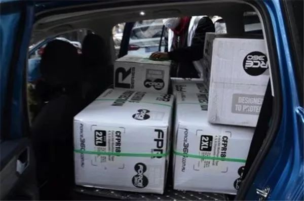
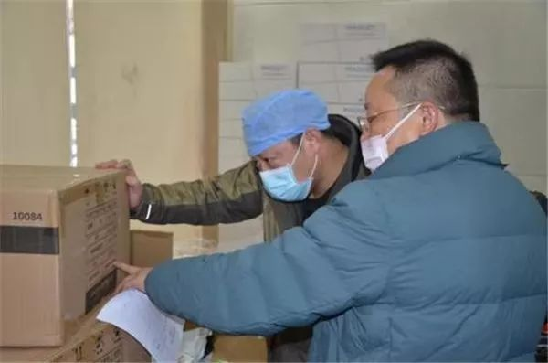

到边界拿货，货车司机组队……医疗物资如何打通武汉城
原文链接 备份链接 *************▲************* 大批量新国标标准的口罩正进入嘉兴“心脏仓” 。 （新华社/阿里巴巴供图/图） 全文共*4420*字，阅读大约需要*10*分钟。 “缺口以万为单位”，武汉市汉口医 …
今天，湖北省武汉市红十字会向武汉市中心医院提供了医用外科口罩4000个、医用防护服600套；向武汉市洪山区中医医院提供了医用防护服400套，84消毒液10箱，医用口罩5箱。武汉红十字会表示，接收的所有物资都将被送往一线进行疫情控制工作。武汉市红十字会供图
本文约1558字
预计阅读时间4分钟
中青报·中青网武汉前方报道组 王嘉兴 雷宇
近日，众多援助物资已经到达武汉，或正在路上。然而，1月26日，中青报·中青网记者对话多名武汉市的一线医护人员，发现防护用品紧张的情况仍然普遍存在。
“没有N95口罩，我们只能戴两层一次性口罩”“我不吃饭，不喝水，就想省下一件防护服”“本应是一次性的护目镜被我们消毒后反复使用”……武汉市一家区级发热患者定点收治医院的医生李红（化名）说。
李红告诉记者，她本人及同事曾收到不少好心人的消息，表示可以提供物资，但医院不允许医生接受私人捐助。记者采访了该院院办，院办表示，医院目前不接受私人捐助，只接受武汉市红十字会的调度，建议私人统一捐助给红十字会。
但现状是，医院的防护用品依然非常紧张。
据李红观察，医院缺乏基本防护用品的情况长期存在。她称，在疫情开始前，库存防护服不足100套，没有护目镜和面罩，也没有N95口罩。甚至，李红所在的医院被征用为发热患者定点收治医院后，第一班医生护士的防护服是领导从别的科室紧急借来的。
1月23日晚，李红曾向医院设备科提出需求，设备科紧急向医院上级请求调货。但次日，设备科的同事告知，武汉市各医院都在求援，他们一直忙到凌晨，也只拿到少量防护用品。
截至1月25日中午，工信部已向武汉调用了防护服1.4万件、医用手套11万双，并通过协调紧急采购，为武汉落实各类口罩货源300万个，落实防护服货源10万件，落实护目镜2180副。
但据湖北省向工信部提供的需求清单，每日医用防护服的需求是10万件。前述知情人士称，其向武汉市负责采购的卫生管理部门了解的情况是，“向上面报的表做了不少，东西一段时间没怎么看到。”

武汉市红十字会供图
一名接近武汉市红十字会的知情人士告诉记者，武汉市红十字会目前收到的捐赠物资和实际需求有偏差，“有的类型不符、标准不符，很多想要的东西没有捐到。”
根据武汉市红十字会1月25日公告，武汉市各大定点救治医院亟需的医疗物资统计中，N95口罩、防护服等医用耗材均依然标注为“急需”。
也有一些一线医护人员认为，到达当地的物资都被几家部属医院拿走了，“因为他们名气大，外界认为送到他们那效果好”。但前述知情人士表示，据其了解的情况，大批量的就诊物资需求在武汉市的基层医院。
但是，武汉市的协和医院等多家部属医院同样在喊渴。
“每天都在担心‘下一餐断炊了’”，26日中午，某部属三甲医院一位领导告诉中青报•中青网记者，目前医院防护物资紧缺，一部分卡在机场等关口不准取，一部分物流进不来武汉。让他觉得匪夷所思的是，昨晚一家市内企业定向捐赠的物资也在市区被截留了。
由于物资紧缺，李红和同事曾以私人名义接受社会捐助。但社会捐助的物资大多无法满足医学防护要求，据她估计，只有30%的物资能够投入使用。
 武汉市红十字会供图
武汉市红十字会供图
医院间，甚至同一医院的不同科室间都出现了争私人捐助的情况。24日晚上，李红本已联系好接受一批来自好心人的物资，但等她到医院门口，发现物资已被其他科室取走，“大家都很难，也不好去要回来”。
但她理解同事“截胡”。她说，医院内也存在资源分配不均的问题。她告诉记者，院方在获得官方支持后，会优先分给院方认为重要的科室，部分也在一线、亟需防护用品的医护人员没有被照顾到。
一位参与过非典救治的专家分析，救援初期外界的捐赠很多都是好心，但是如果需求不匹配，不仅造成浪费，对于救援通道和救援调度都会造成影响，这就需要系统化的组织统筹，有专门对外的机构统一标准，统一对外。
当地一位观察人士同样呼吁，救援到底还差不差，怎么科学调配，疫情中应该及时对外通报，这是应对一场疫情战中的重要组成内容，“毕竟民众对这些关键信息不知道，才真是一个孤城”。
（中国青年报客户端武汉1月26日电）
中国青年报·中青在线出品
微信编辑 | 陈轶男

觉得好看请点这里
原文链接 备份链接 *************▲************* 大批量新国标标准的口罩正进入嘉兴“心脏仓” 。 （新华社/阿里巴巴供图/图） 全文共*4420*字，阅读大约需要*10*分钟。 “缺口以万为单位”，武汉市汉口医 …
原文链接 备份链接 武汉第一批七家定点医院医用物资也存在短缺 防疫物资今日抵达汉口，明日有望缓解 本文首发于南方人物周刊 文 | 本刊记者 徐梅 赵蕾 张宇欣 编辑 | 周建平 蒯乐昊 全文约3479字，细读大约需要9分钟 有的市属一 …
原文链接 备份链接 按规定，他们每接一次病人，都要全车消毒、销毁防护服，不然可能会成为新的传染源。但现实情况是，他们全站连一套防护服都没了。除夕夜里两点，他没有睡觉，发了这半年里唯一一条不是关于女儿的朋友圈，是一条物资的求助。他告诉《人 …
原文链接 备份链接 记者 | 驳静 董冀宁 实习记者 | 李秀莉 昨天下午，“湖北之声”发布《武汉紧急求援》，指出多家医院物资紧张，可能只够维持3-5天。本刊记者接触到的一线医护人员也反应了同样的情况。“为什么我们显得这么着急呢？病毒肆 …
原文链接 备份链接 武汉140公里以外：一天隔离50人，除夕夜接诊护士没有防护服丨武汉肺炎亲历 2020-01-25 22:47 作者：李静 来源：中国经营网 本报记者 李静 湖北广水报道 一天之内隔离50人，这对于广水市第一人民医院院办 …